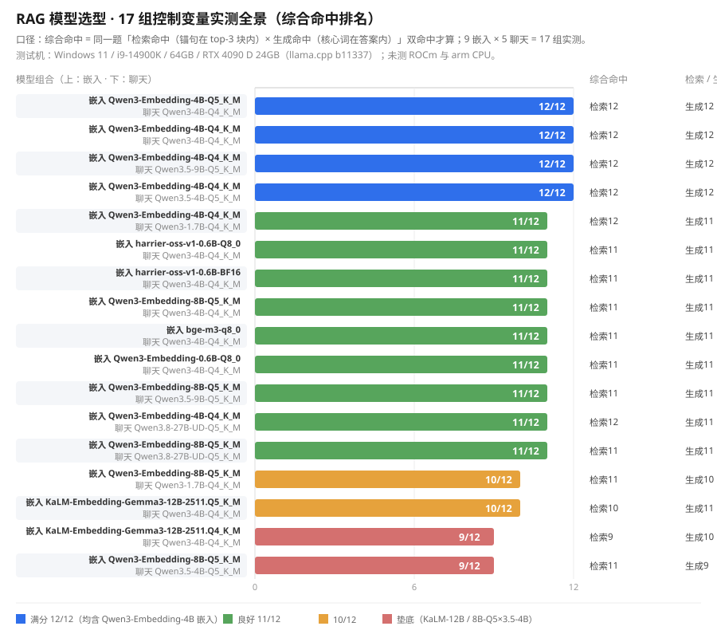

从零手写 RAG（检索增强生成）全链路 + FastAPI 整合包：本地私有知识库问答，答案可追溯。
项目用最朴素的 Python 实现 RAG 的每一环——切块、向量化、存储、余弦检索、Prompt 拼装、生成——不用任何 RAG 框架封装，代码量小、可读性强，既是求职作品，也是学习路线图。
全部结论基于本机实测（Windows 11 / i9-14900K / 64GB / RTX 4090 D 24GB，llama.cpp b11337；未测 ROCm 与 arm CPU），完整表格见 docs/模型选型报告.md。
17 组实测全景（综合命中排名，每行上为嵌入模型、下为聊天模型）：

一句话结论：嵌入选 Qwen3-Embedding-4B-Q4_K_M（唯一综合 12/12 档），聊天按硬件选 Qwen3-4B-Q4_K_M（CPU，1.6s/题）或 Qwen3.5-9B-Q5_K_M（独显，3.4s/题）；Qwen3.8-27B 与 KaLM-Embedding-Gemma3-12B 无质量优势且慢/大，已淘汰。
┌────────────────────────────────────────────────────┐
│ RAG 管线（手写） │
上传文档 │ │
─────────► │ 归一化 ─► 切块 ─► 向量化 ─► SQLite 存储 │
提问 │ │ │
─────────► │ 余弦检索 top-k ◄─────── 向量化提问 │
│ │ │
│ 拼 Prompt（资料+问题+不编造指令） │
│ │ │
│ 本地模型生成 ─► 回答 + 参考源 │
└────────────────────────────────────────────────────┘
输入 FastAPI（/ask /library /history /static）
两条路，按需选择：
uv sync
uv run pytest -q # 63 passed
uv run ruff check rag tests main.py scripts
uv run mypy
测试全部用 mock，不依赖真实模型，适合快速了解代码与跑通 CI 姿势。
前置：Windows + uv + llama.cpp（CUDA 版），模型文件放在本地模型目录（下面命令中的 D:\你的模型目录 按实际路径改）。
--embedding --pooling last 是编码模型必带参数）：llama-server.exe -m D:\你的模型目录\qwen3-embed\Qwen3-Embedding-8B-Q5_K_M.gguf --embedding --pooling last -c 8192 -b 8192 -ub 8192 --host 127.0.0.1 --port 8081
--embedding）：llama-server.exe -m D:\你的模型目录\qwen3.5\Qwen3.5-4B-Q5_K_M.gguf -c 8192 -b 8192 -ub 8192 --host 127.0.0.1 --port 8080
docs/RAG学习笔记01-模型服务与向量化输入.md）：uv run python -m scripts.build_kb "docs\RAG学习笔记01-模型服务与向量化输入.md" --reset
uv run uvicorn main:app --host 127.0.0.1 --port 8000
详细步骤与常见问题见 docs/快速上手.md。想零代码开箱即用？下载整合包（CPU / CUDA / Online 三版），见下方 整合包下载与使用教程。
不想折腾环境？下载整合包，解压双击 start.bat 即用（模型内置 / 在线版自动下载）：
| 版本 | 大小 | 说明 | 适用 |
|---|---|---|---|
| RAG_HandProj_CPU_v0.1.0.zip | 4.59 GB | 模型直打，纯 CPU 运行 | 无独立显卡 / 老电脑 |
| RAG_HandProj_CUDA_v0.1.0.zip | 9.53 GB | 模型直打，CUDA 12/13 双后端自动选 | NVIDIA 独显 |
| RAG_HandProj_Online_v0.1.0.zip | 1.23 GB | 缺模型自动下载（断点续传），启动可选 CPU / 核显 / 独显档位 | 网速好、想省流量 |
下载后运行网盘内的 校验压缩包完整性.bat（依赖同目录 SHA256SUMS.txt）校验三个压缩包是否完整、未被篡改。
RAG_HandProj/
├── main.py # FastAPI 入口：/ask 问答、/library 知识库管理、/history、演示页
├── rag/
│ ├── normalize.py # Markdown 方言归一化（callout / 脚注降级）
│ ├── chunking.py # 切块器：标题结构切 + 超长节窗口切 + 无标题兜底
│ ├── embed.py # 向量化客户端（POST /v1/embeddings）
│ ├── store.py # SQLite 存储：chunks（去重幂等）+ history + 余弦检索
│ └── generate.py # 生成客户端：RAG prompt 拼装 + 调对话模型
├── scripts/build_kb.py # 构建知识库 CLI
├── static/index.html # 离线演示页（答案 + 可点击参考源侧边栏）
├── tests/ # 63 个测试（mock 链路 + 契约）
├── docs/ # 源码导读、使用说明、选型报告、学习笔记
└── CONTRIBUTING.md # 提交规范（Conventional Commits + 分支语义）
| 接口 | 说明 |
|---|---|
GET / |
演示页（离线单页） |
POST /ask |
问答：{"query": "..."} → {"answer": "...", "sources": [{source, content}]} |
GET /library |
知识库清单（文档 + 块数） |
POST /library |
上传 txt/md 追加入库（自动归一化 → 切块 → 向量化） |
DELETE /library/{source} |
删除文档 |
GET /history |
问答历史（最新在前） |
GET /docs |
Swagger UI（接口文档） |
main：里程碑主线，每次合并 = 一个可验收的知识点dev：碎步工作区，过程细节在这里main M1 工具链 ─► M2 核心链路 ─► M3 /ask 全链路 ─► M4 知识库管理 ─► M5 门面文档
FastAPI / SQLite / requests / uv / ruff / mypy / pytest / llama.cpp（本地推理）
AGPLv3 —— 允许商用，但你必须告知使用者源码可免费获取；修改或再分发（含部署为网络服务）后，修改版同样必须以 AGPLv3 开源。模型文件与文档内容版权归各自来源。
全文见 LICENSE。